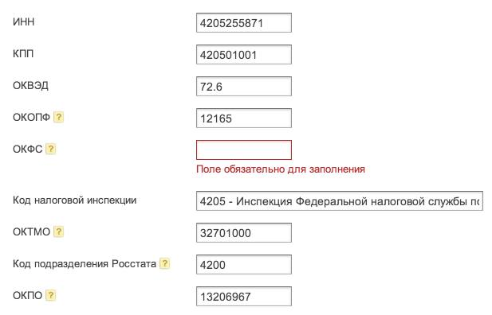

Каждый раз, когда я начинаю заниматься бухгалтерией, эти имитаторы деятельности вводят очередной код, который нужно где-то узнавать.
Как программисту и гражданину мне больно осознавать, что кому-то не хватает мозгов привязать абсолютно все свои возможные идентификаторы к ИНН.
Сегодня форма подготовки бухгалтерского баланса начинается с вот такого окна. Будьте здоровы.
